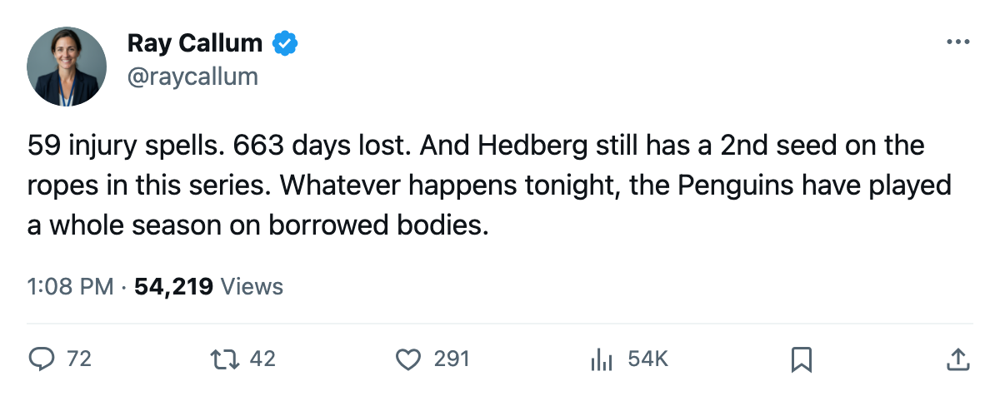

Series Check: Pittsburgh hosts New Jersey at 1-1, and the Penguins have survived 59 injury spells to be here
The 7th seed stole Game 1 in Newark. Tonight they get Game 3 at home, on a roster the league has hit harder than any other.
 Ray CallumSenior correspondent · Home Ice Network
Ray CallumSenior correspondent · Home Ice Network
The piece
The  Pittsburgh Penguins Penguins and
Pittsburgh Penguins Penguins and  New Jersey Devils Devils split two games in Newark and now meet in Pittsburgh tonight, 2005-04-13, for Game 3 of this first-round series. Pittsburgh won 3-2 on 2005-04-09. New Jersey answered 3-1 on 2005-04-11. Tonight is the 8th meeting of the season; the Devils won the regular-season series 4-3-0.
New Jersey Devils Devils split two games in Newark and now meet in Pittsburgh tonight, 2005-04-13, for Game 3 of this first-round series. Pittsburgh won 3-2 on 2005-04-09. New Jersey answered 3-1 on 2005-04-11. Tonight is the 8th meeting of the season; the Devils won the regular-season series 4-3-0.
Pittsburgh Penguins is the most injury-plagued team in the league. The Penguins logged 59 injury spells and 663 man-days on the shelf this season, the highest totals of any of the 30 clubs. They enter tonight with 4 players unavailable.  Aleksey Morozov79, a winger rated 80, carries a hand injury with a return date of 2005-04-16.
Aleksey Morozov79, a winger rated 80, carries a hand injury with a return date of 2005-04-16.  Guillaume Lefebvre79 is out with a foot problem targeted for 2005-05-15, past any reasonable window for this series.
Guillaume Lefebvre79 is out with a foot problem targeted for 2005-05-15, past any reasonable window for this series.
 Johan Hedberg89 appears 7 times in the Pittsburgh injury ledger. He played 63 of 82 games, 77 percent of the schedule, and has kept a 7th seed level with the 2nd seed after two periods of this series.
Johan Hedberg89 appears 7 times in the Pittsburgh injury ledger. He played 63 of 82 games, 77 percent of the schedule, and has kept a 7th seed level with the 2nd seed after two periods of this series.
The Devils are a different story in the trainer's room.  Martin Brodeur93 played 66 games, 80 percent of the schedule. New Jersey Devils finished with 52 injury spells and 121 man-days lost. That is 542 fewer days than Pittsburgh, the widest gap in the league.
Martin Brodeur93 played 66 games, 80 percent of the schedule. New Jersey Devils finished with 52 injury spells and 121 man-days lost. That is 542 fewer days than Pittsburgh, the widest gap in the league.
The Penguins' 85 points won them a playoff spot despite the attrition. Tonight, on their own ice, they have the chance to take a 2-1 lead against a Devils team that lost 121 days across the entire season, roughly one-fifth of what Pittsburgh lost to its 59 spells.
Brodeur has started 80 percent of New Jersey's games and carried a workload no other 2nd seed matched. Hedberg has started 77 percent of Pittsburgh's, and every start came with at least one teammate missing from the lineup.
